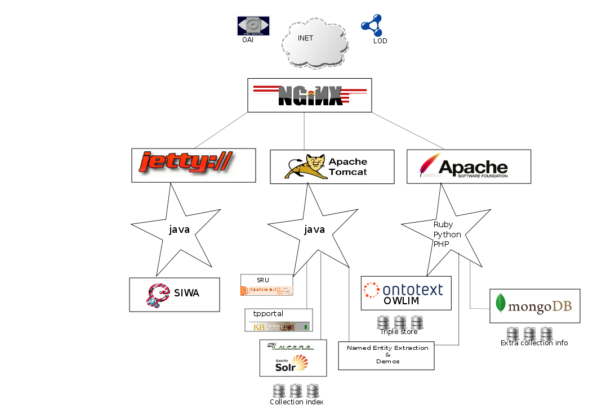
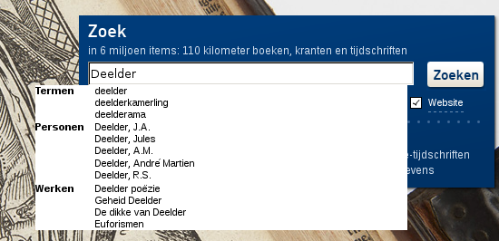
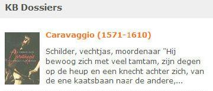
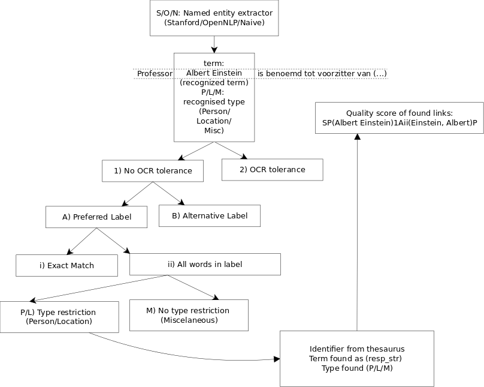
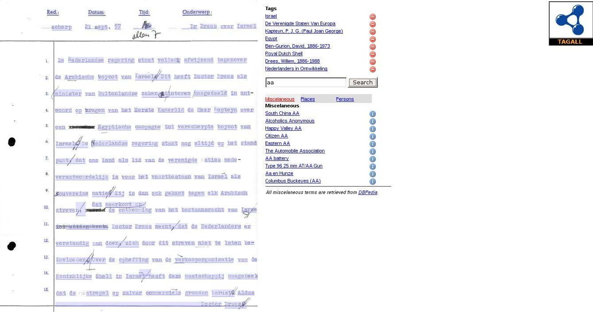

KBresearch
KB Research STITCHPlus
About
 This page describes some of the digital library research projects of the National library of the Netherlands (KB). The research topics range from indexing up to 20 million metadata records, to entity extraction and recognition. Techniques used to perform these experiments involve SRU, OAI, RDF, SKOS, DC, ALTO, XML, XSL and other protocols, schema's and methods common to digital libraries. The research was conducted over the course of three years starting in 2009. The prime suspects of this research are Theo van Veen, René van der Ark and Willem Jan Faber. Most of the research relied on open source software, therefore we have decided to give software back to the community and publish our prototypes on GitHub with a GNU licence (all externals have their own licence). The main part of this research was funded by the KB and some research was funded by STITCHPlus.
{kind=link}
Solr/Lucene to replace Verity search engine
The main purpose of this research was to investigate possibilities for using the open source search engine SOLR/Lucene to replace the old proprietary search engine of the KB. This research focused on the stability, indexing speed, query speed, and query possibilities of SOLR/Lucene.

By indexing a large quantity of documents using SOLR/Lucene we were able to prove that the setup could handle a significant amount of data and still be very responsive at query time. In order to be able to index such a large number of documents we had to develop an OAI-MPH harvester that transformed the documents from Dublin Core format to SOLR/Lucene format.
To control the harvesting process, a simple harvesting console was created to select the collections and to monitor progress.
In order to integrate SOLR/Lucene into the architectural design of the KB an SRU interface was developed, which, among other things, was used for a mobile search application to interact with end users. One of the requests was to have auto-completion for specific collections. To show that this was possible an auto-completion prototype was created. Furthermore several options where tried in the SRU implementation, like the ability to respond with a suggestion or did u mean in SRU, and some effort was put into working with  facets on SRU level. After showing the capabilities of SOLR/Lucene, the KB decided to move from their proprietary search engine to SOLR/Lucene and switch from Microsoft Windows to RedHat Linux for performance reasons.
facets on SRU level. After showing the capabilities of SOLR/Lucene, the KB decided to move from their proprietary search engine to SOLR/Lucene and switch from Microsoft Windows to RedHat Linux for performance reasons.
{kind=link}
Spreading KB created profile-dossiers

In order to reach a larger audience with KB created content, an experiment was conducted in cooperation with bibliotheek.nl. The idea was to ingest relevant content into the digital repository of bibliotheek.nl, and show the profiles in an other context. A simple format was agreed upon to transfer the data for initial ingestion.
{kind=link}
Collection enrichment
To create a greater value for our collections we have tested different approaches to enhance scanned OCR text, and adding extra (thesaurus-) identifiers to OCR'ed texts. The first thing we did was determine the relevance of all the entries in our thesaurus by counting the frequency of occurrence in our general collection. By knowing the relevance of the terms in our thesaurus we could use this for ranking in related experiments. To correct OCR in the first approach we tried to extract named entities from poor OCR text, and introduce spelling errors (the same way they are introduced in the poor OCR) into the thesaurus, to cancel out the spelling errors found in the original text. This approach produced dissatisfying results because the named entity extractor was not able to work with corrupted OCR.
In the second approach, we worked the other way around, iterating over all the misspelled entries in our thesaurus and search in the poor OCR documents. This resulted in a more accurate recognition of named entities in the corrupted OCR. We also tested several named entity extractors, including Stanford, OpenNLP and NLTK against a benchmark extractor. Evaluation of named entity extraction was done using the decision mechanism as depiction on the right. This led to the following scores and precision recall numbers.

In order to represent the recognized entities in a document we have setup a key-value store backend (first couchdb, later mongodb), which is used to inject extra identifiers into SRU responses, the extra information is wrapped into an dc:expand block. This makes it possible to separate the original collection from the extra identifiers that belong to the collection. Additionally we have added LOD identifiers to our own thesauri.
A different kind of enriching documents is looking at events occurred in history, this will result in getting to know when an event happened, and will extract the involved parties. Even more fancy results will show up when combining this with an LOD provider like GEOnames. To get a sense of how frequent things occurred over time a timeline view was made.
{kind=link}
Enhanced search experience
In order to enhance the search experience of our users, we have re-indexed one of our collections and added LOD information to our collection index, as well as our own known spelling variants of authors. This enables users to search for persons and places without having to know the preferred term that was entered by the librarian classifying the document.
Furthermore, the use of Linked Data enables us to search collections in a semantic way, without the need of adding extra information to the collection, as long as the collection uses the KB thesauri for classification. To integrate semantic search with regular searching a new command was added to the SRU search layer, the expression [ indicates a semantic (skos:broader) search and is parsed to a sparql query to return the relevant identifiers. The semantic search part is resolved into multiple related identifiers, these identifiers are used to do a regular search in SOLR/Lucene. To enable the semantic way of searching, we have installed OWLIM (a triple store backend with SPARQL and Lucene indexing support) and loaded our thesaurus in SKOS format.
User generated content
{kind=link}
One of the main reasons to use crowd-sourced information is that the users feel more engaged with the material at hand, also it helps users to find documents that would otherwise not be found. For there reasons the semantic tagger was created. The crowd could provide useful to help us fix poor OCR, for this purpose an OCR corrector tool was written. Another way we used crowd-sourced content is by tapping into the wisdom of clouds via an LOD bridge. The LOD bride provides us an easy way to access information scattered over the semantic web via a single URI.
Putting it all together
{kind=link}
In order to show all these different experiments as a whole we used a fork of the TELplus portal, which enabled us to build small modular services that could be hooked up to the portal. The portal works with SIWA and thus makes it easy to plug-in new services that were developed. Since a lot of information in libraries comes in XML form and transformations for specific views are often needed we made an XSLT proxy, which works via HTTP with an input XML as source, an XSL document as second parameter to transform documents.. Some of the research conducted here will be implemented in the next generation library portal that the KB is building.
Used techniques, software and buzzwords
AJAX: Asynchronous JavaScript and XML, https://secure.wikimedia.org/wikipedia/en/wiki/Ajax_(programming)
ALTO: Analyzed Layout and Text Object, http://www.loc.gov/standards/alto/
Autocomplete: https://secure.wikimedia.org/wikipedia/en/wiki/Autocomplete
CouchDB: Apache CouchDB, document-oriented database, https://couchdb.apache.org/
Crowdsourcing: the act of sourcing tasks, https://secure.wikimedia.org/wikipedia/en/wiki/Crowdsourcing
DIDL: Digital Item Declaration Language, http://xml.coverpages.org/mpeg21-didl.html
Dublin Core: metadata terms are a set of vocabulary terms, https://secure.wikimedia.org/wikipedia/en/wiki/Dublin_core
Faceted classification: https://secure.wikimedia.org/wikipedia/en/wiki/Faceted_classification
GNU: GNU General Public License, https://secure.wikimedia.org/wikipedia/en/wiki/GNU_General_Public_License
JSONP: JSON with padding, https://secure.wikimedia.org/wikipedia/en/wiki/JSONP
LOD: Linked Open Data, http://linkeddata.org/
MongoDB: Document-oriented database, http://www.mongodb.org
NoSQL: Not only SQL, https://secure.wikimedia.org/wikipedia/en/wiki/NoSQL
OAI-MPH: Open Archives Initiative, http://www.openarchives.org/
OCR: Optical character recognition, https://secure.wikimedia.org/wikipedia/nl/wiki/Optical_character_recognition
Open Source: software that is available in source code form, https://secure.wikimedia.org/wikipedia/en/wiki/Open-source_software
OWLIM: Commercial RDF database with SPARQL backend, http://www.ontotext.com/owlim
Proprietary: Exclusive right of the copyright holder, https://secure.wikimedia.org/wikipedia/en/wiki/Proprietary_software
RDF: Resource Description Framework, http://www.w3.org/RDF/
Semantic Web: Man-made woven web of data, https://secure.wikimedia.org/wikipedia/en/wiki/Semantic_Web
SIWA: Schema for Integration of Web Applications, http://www.kbresearch.nl/SIWA
SKOS: Simple Knowledge Organization System, http://www.w3.org/2004/02/skos/
SOLR/Lucene: open-source search server, https://lucene.apache.org/solr/
SPARQL: Simple Protocol and RDF Query Language, https://secure.wikimedia.org/wikipedia/en/wiki/SPARQL
SRU: Search/Retrieve via URL, http://www.loc.gov/standards/sru/
XML: Extensible Markup Language, https://secure.wikimedia.org/wikipedia/nl/wiki/Extensible_Markup_Language
XSL: EXtensible Stylesheet Language, https://secure.wikimedia.org/wikipedia/en/wiki/Xsl
XSLT: Extensible Stylesheet Language Transformations, https://secure.wikimedia.org/wikipedia/en/wiki/Xslt